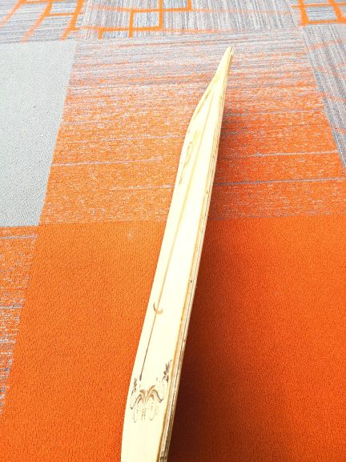
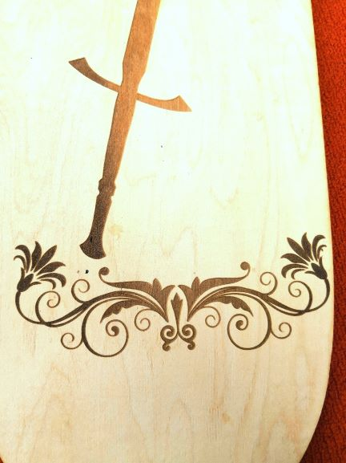

In class today, our task was to design and make our our skateboard. I choose to make the type which I need to use "vaccume" tychqiue after I glued all the pieces of woods for my skateboard together. I first dsign the decoration for my skateboard on CorelDraw. I combined the pictures of a sword and a butterfly together and used laser cutter to cut the decoration on the bottom of my skateboard.Then I sticked my skateboard together with the help from my friend. The hardest part for making the skateboard is acutally the last part which is to vaccum skateboard by using the plastic bag and a pumper. I put my skateboard into the special plastic bag on a vaccum form. By taking out of the air out of the bag I was able to bent the two ends of my skateboard, then I sealed the plastic bag by special kind of tape. The repetition of pumping( because I need to take the air out by using pumpoer) requires a lot of physcial exercise. After I finally got my skateboard after a day, I cutted the edge of my skateboard with a planer in order to make it look nicer. Althoug the process of making sakteboard is hard, I think my skateboard turned out really pretty.



In class today, we need to make our own moulds for chocolate. We need to use wax to make the nagetive part of the mould first, so I
designed my mould in Coreldraw then I extruded in it 360 Fusion. After I got the negative part of my mould, we used the Smooth-sil 940 to make the
positive part of the mould. I poured the silicon into the mould carefully and let it cure for 24 hours. Then the next day I got the postive
mould of my mould. However, the floral scrolls of my mould are too narrow, which make my negative mould broke a little bite
after I took off my positive silicon mould from it. Next time if I have another chance to make a chocalate mould, I should choose somthing
not too compicate and make all the curves of the image I chose wider. Finally I just poured chocolate in my mould! I got a butterfly chocolate! :)


{kind=link}